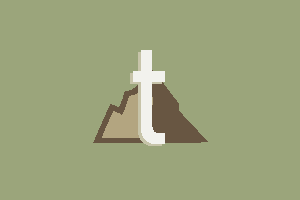
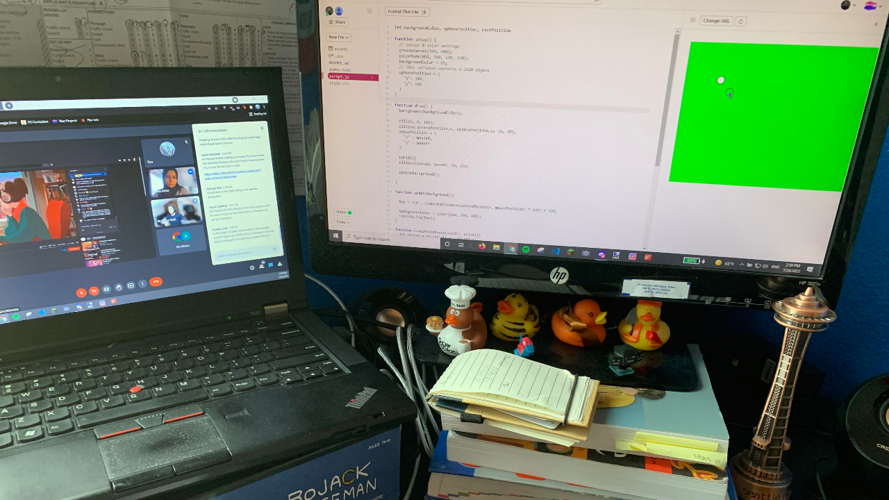
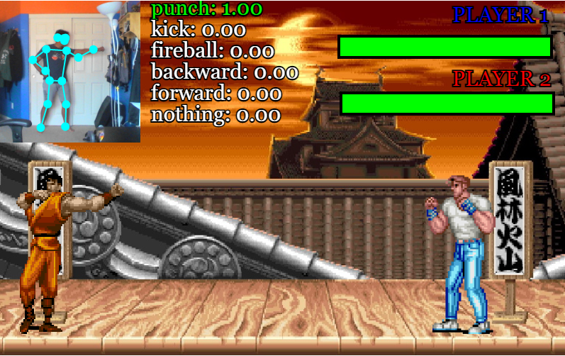
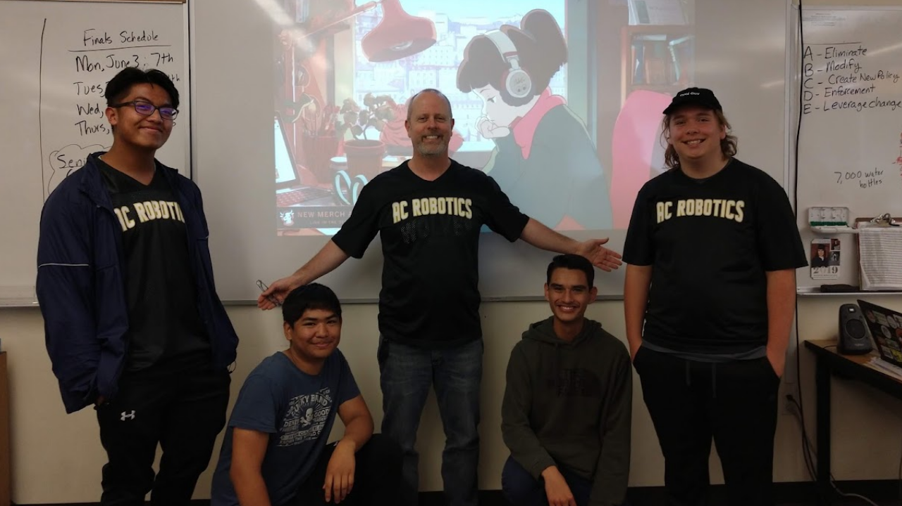
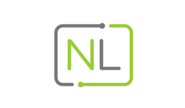

about me
Hey! I'm a recent high school graduate, and incoming San Jose State University freshman, from the Bay Area, CA. I love to code to see ideas come to life and be used by myself and others! This is a place for me to show off some of my creations, as well as random parts of my life!
skills
languages
- html/javascript/css
- java
- python
frameworks
- node.js
- reactJS
- mongoDB
other
- google's teachable machine
- tweepy
- web extensions
projects
Here's a little of what I've been up to!
Type Tester
an extension that can measures your WPM, right in a little window!
about
This was the first coding project I've ever made, so it holds a special place in my heart. I started this project before I really knew much on top of the basics, so I learned a lot of the lessons that you don't get through the basic tutorials.
While I learned some new programming concepts, I also learned a lot about myself as a developer: I got a clearer insight on things like my unique workflow and preferences. While making this project, I was exposed to strategies such as the Pomodoro method and Getting Things Done, which have helped me in creating every project since.
Type Tester
A web extension that allows you to type out a prompt and test your WPM, right in your browser!
2021Percent
a bot that tweeted every time my high school class passed 1% of high school!
Tweets by 2021percentabout
This bot was a fun project to put together. I really enjoyed making a bot that gave me fun information about my actual life, and it was cool to see it on my timeline from time to time. It was good first learning experience for getting comfortable with web API's and what was possible with them, while also learning how online code hosting works, through PythonAnywhere.
@2021Percent
A bot that tweeted out the percentage of high school my high school class has completed!
events
Things happening in my life!
Google's CSSI
I participated in Google's Computer Science Summer Institute!
about
I was admitted into Google's Computer Science Summer Institute (CSSI)! It's a 4 week summer program taught by Google engineers, teaching javascript! I was able to work with other incoming freshmen, and eventually create a project that I presented in front of the group, plus some Google engineers!
I still remember the exact moment I got the e-mail that I was in. My friends and I were at McDonalds, on the way to Lake Berryessa on senior ditch day. It was huge for me, as Google was a dream job for a long time. Even though it was a training program, I was glad to get my foot in the door. I was actually accepted into the SJSU extension, meaning I would be grouped with other incoming freshmen at SJSU, and co-taught by professors in my CS department.
what i learned
I already knew a lot of what they were teaching coding wise, but I was able to learn a lot of the 'soft skills' that came with coding. This was the first time I had to code alongside others, and while it started out rough, I was able to code with others fairly well. I learned that there are things that you have to communicate with a partner, that I've never considered before. For all of our projects, we had to agree upon a naming scheme, leave comments that explained how our functions worked, and be able to explain our code succinctly.
There were extra info sessions on top of the daily coding meetings, where we could learn about things like combatting impostor syndrome, maintaining our mental health, as well as receive inside looks at some Google projects. I was even able to do a mock interview with an engineer, and I found that extremely useful for the near future.
final project
To end off the four weeks, we were tasked with creating a final project to encapsulate what we learned (and a little more). My group decided on creating a fighting game, where the main draw would be that you could control your characters movements yourself, via webcam. It utilized Google's Teachable Machine API, which allowed us to set, and detect different poses. From there, we mapped those readings to a fighting game that we also made.
Although it wasn't the perfect project, it was really fun to put together. Like most coding projects, it wasn't working for a couple of stressful days. However, once we finally got to the eureka moment, I was reminded of an important feeling. It felt very revitalizing -- it showed me that there are no limits when it comes to what's possible with coding. Although it wasn't anything too complicated, it was eye opening to see that something like a motion tracking fighting game is within my skill set. After this, I've been more motivated to pursue more 'prestigious', or technically complex projects.
overall thoughts
It was a very nice program, and it came at the perfect time for me. It was nice to get to collaborate with other programmers which is something I've never done before, and that taught me a lot. The extra info sessions were really helpful, as they taught me things that you couldn't just learn while watching YouTube videos. The workshops, collaboration, and success of the final project all helped me feel a lot more confident in pursuing more complex projects.
program dates:
July 12th - August 6th, 2021
findmore:
CSSI websitetechnologies learned:
HTML
CSS
JS
Glitch
Teachable Machine
Google CSSI
I was recently accepted into Google's Computer Science Summer Institute!
Graduation
I graduated, class of 2021!
thoughts on graduating
It feels weird to think about leaving the group of classmates that I've been with for almost 18 years. Having never moved, I've seen my classmates at their highest and lowest points, and they've seen mine. Although I wasn't completely ready to leave everything I knew behind, I felt that I was as ready to leave as I would ever be.
high school activities
I actually really enjoyed high school, which is probably easier to say now that it's over. But I learned a lot, specifically through the clubs that I was a part of.
As for my robotics club, I've been in it for 6 years, and it will always be a part of me. It instilled a love for programming and technology into me, and gave me an outlet for it, during all those years. Towards my later years as a leader of the club, I started teaching Python classes to other students. I realized how much I enjoy seeing others learn how to code, as I could see them feeling the same sensation that I love so much.
On the non-coding side, I also really valued my time in Link Crew. We were tasked with helping freshman throughout their transition from middle to high school. While it wasn't always the easiest club, being a leader in those social situations really helped mitigate my social anxiety, and did a lot for my mental health. I left the club being a better communicator, friend, and leader.
thoughts as i write in college
It's actually been a while since I've graduated, for me to be writing this now. The change of environment from the peaceful suburbs of American Canyon, to the bustling life of San Jose is something I can't really put into words, but I can say that I'm very much enjoying the change. I was worried about making friends, but I found a pretty good group of people here. I really enjoy all the doors that have been opened now that I have the title of a college student (even if I never get emails back, LOL).
last updated:
October 10th, 2021
graduation date
June 15th, 2021
Graduation
I graduated from high school, class of 2021!
NapaLearns' Teaching Assistant
I got my first programming related job at NapaLearns!
about
I ended up getting my first working experience related to programming! I am a teaching assistant for a local organization's Python class. I was introduced to the organization as a student of the same Python class. It was a two part class, beginner and intermediate Python. After making it through both classes and developing a good relationship with the professor who taught it, my instructor offered me a position as a teaching assistant!
what i did
My main job was to be a tutor of sorts, for the students who needed extra help. Since the professor who taught it was often busy, I was open for any struggling student to come to for help. I would typically help them work through their homework, or re-explain principles that they didn't fully understand. I had some prior experience doing this, as I would teach other students Python, as part of my Robotics club in high school. Nonetheless, I found that teaching has greatly benefitted me. It strengthened my ability to walk others through my thought process, and strengthened my foundations as a programmer.
Additionally, I would sit in on classes to be there to support the professor. One thing I've observed in classes is that, often times, the person teaching it has learned what they are teaching a long time ago. To them, some principles seem like second nature, however to new learners, it could be something completely foreign to them. As someone who is comfortable with Python and prgoramming, but have still remembers what it is like to learn it as from the student prospective, I tried to provide a different and hopefully more understanding perspective to those who didn't get certain topics.
last updated:
October 7th, 2021
date offered:
June 20th, 2021
NapaLearns Python Teaching Assistant
I was offered a TA position after completing a Python training program!